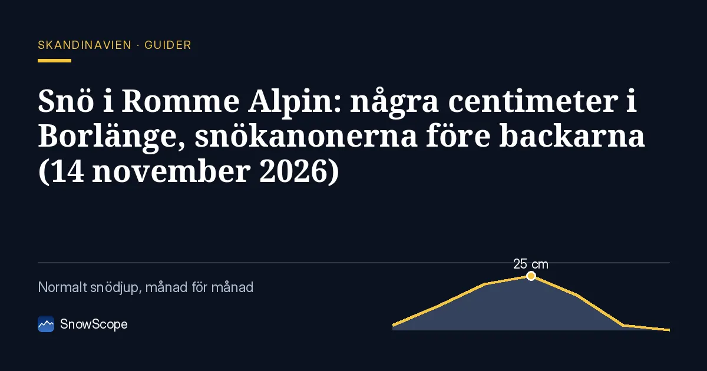

Snö i Romme Alpin: några centimeter i Borlänge, snökanonerna före backarna (14 november 2026)
Romme ligger lågt, från 141 till 406 m nära Borlänge, och är beroende av snökanoner för att öppna. Den 13 november fick regionen sin första riktiga snö på säsongen, men den blev ojämnt fördelad och mycket av den kommer inte att överleva veckans regn.
Se snöprognosen för Romme Alpin live i SnowScope-appenSnödjup, pudervarningar och 3D-kartan, gratis.

Spridd snö, mestadels smältande
Den första snön föll över regionen den 12 och 13 november, men varierade mycket mellan olika platser. Ludvika, 26 km väster om, registrerade 10 cm; Bjursås norr om Falun hade 7 cm; Borlänge, närmaste väderstation 12 km bort och 146 m höjd, mätte 4 cm; Falun själv förblev snöfritt. Denna ojämnhet är typisk för tidig säsongssnö i låg höjd: några hundra meters höjdskillnad, lokal vind och stadsvärme påverkar alla vad som fastnar.
Totalt ackumulerades cirka 5 cm nysnö i basen under den senaste veckan och omkring 8 cm högre upp. Det är ett tunt snötäcke på bar mark, och meteorologer förväntar sig att det försvinner.

Regn ersätter snön från idag
De nästa sju dagarna kommer nästan ingen färsk snö till Romme. I stället kommer mest nederbörd att falla som regn: cirka 85 procent i basen och 70 procent högst upp. Nollgradersgränsen sitter omkring 640 m, långt ovanför skidortens högsta punkt. Eventuellt fläckvis täcke kvar efter regn kommer att krympa eller försvinna.
Detta mönster är vanligt för Romme i mitten av november. Kyla är sällsynt; fuktig luft från Atlanten är det inte.
Vintertrenden: mindre snö, fler kanoner
Rommes senaste 46 vintrar visar hur lite naturlig snö som kommer tidigt. Det vanliga djupet den 14 november är bara 1 cm; den 30 november stiger det till 6 cm; i mitten av december 10 cm. I fyra vintrar av tio hade basen noll naturlig snö den 14 november. Elva gånger under denna 46-årsperiod var säsongens naturliga topp 15 cm eller mindre.
Den längre trenden går nedåt. Mediantoppen för naturlig snö under de första 15 vintrarna var 49 cm, men under de senaste 15 vintrarna sjönk den till 34 cm. Snödagar minskade från 136 till 97. Det är därför Romme inte kan vänta på naturen. Skidortens öppning den 19 december beror på kyla och torra nätter för snökanoner, inte på denna veckas väder.
Vad snökanonerna behöver
Snökanoner fungerar bäst när luften är kall och fuktig, och marken inte är vattenmättad. Denna veckas regn kommer att blöta ned Rommes fält. Den milda perioden som förutspås betyder få frysnätter. Det kan förskjuta snökanonarbetet flera dagar eller längre och skjuta fram öppningen.
Vätstationerna i Borlänge och Ludvika visar att regional snö från väderystem smälter snabbt i november. Bara maskintillverkad snö på backarna överlever tömningen.
Vad som kan väntas i december
December är Rommes huvudsnömånad. Det vanliga djupet den 15 december är 10 cm, och snö faller omkring 93 procent av månaden. Till jul når mediandjupet 13 cm, med snö 90 procent av dagarna. Det är fortfarande blygsamt, men det är när naturligt täcke vanligtvis kommer.
Skidortens öppning från 19 december beror på en blandning: någon naturlig december-snö plus den konstgjorda basen som lagts ner på kalla nätter nu. Om temperaturerna förblir milda genom december kan öppningen försenas.
Tips för skidåkare
- Åk inte längdskidor på den naturliga snön omkring Romme denna vecka; den kommer att smälta eller bli fläckvis is innan den 20 november.
- Om du planerar ett första besök den 19 december, förvänta dig 100 procent artificiell snö och ett begränsat utbud av backar tills naturligt täcke växer.
- Kalla nätter är viktigare än dagtidstemperatur för snökanoner; följ nattprognosen noggrant under de två veckorna före 19 december.
- Håll koll på skidortens öppningsstatus på dess webbplats eller Romme idag-sida; milda perioder kan försena säsongen med dagar.
- Packa lager och vattentäta kläder om du besöker mitten av december; övergången från regn till snö kan medföra våt, tung puder.
Om siffrorna
Snödjupen för skidorterna är det djupaste snötäcket på ortens övre backar på det angivna datumet; de är uppskattningar för ett område, inte en mätning på en punkt. Prognoser kan ändras. Läs alltid den officiella lavinprognosen innan du åker offpist.
Officiella lavinprognoser: Lavinprognoser (Naturvårdsverket)
Citera den här rapporten
För forskning, undervisning eller press: siffrorna och diagrammen får återanvändas fritt under CC BY 4.0 med den här källhänvisningen.
SnowScope (2026), Snö i Romme Alpin: några centimeter i Borlänge, snökanonerna före backarna (14 november 2026), https://snowscope.app/blog/sv/2026/11/romme-alpin-snow-14-november-2026.html, hämtad 2026-11-14
SnowScope (Atlas Labs). (2026, November 14). Snö i Romme Alpin: några centimeter i Borlänge, snökanonerna före backarna (14 november 2026). SnowScope snow reports. https://snowscope.app/blog/sv/2026/11/romme-alpin-snow-14-november-2026.html
BibTeX
@misc{snowscope2026rommealpinsnow14november,
author = {{SnowScope (Atlas Labs)}},
title = {Snö i Romme Alpin: några centimeter i Borlänge, snökanonerna före backarna (14 november 2026)},
year = {2026},
month = nov,
howpublished = {\url{https://snowscope.app/blog/sv/2026/11/romme-alpin-snow-14-november-2026.html}},
note = {Published 2026-11-14 21:09 UTC; accessed 2026-11-14}
}· CC BY 4.0 · Metoder, data och verktyg →
Romme Alpin: snö och temperatur efter höjd, i vinter jämfört med förra (verktyg) →
Följ Romme Alpin
Gratis: ett meddelande när nysnö är på väg, och prognosen varje morgon.